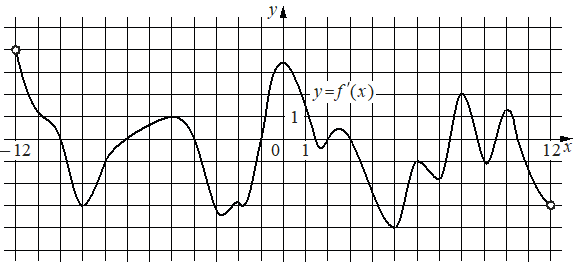

Авторский разбор и аудит предварительны; внешней экспертизы нет.
Модель автора: claude-opus-5-5 (opus; effort=low); в основных частотах: True · принята после просмотра ·
Впишите правильный ответ.
На рисунке изображён график производной функции определённой на интервале Найдите количество точек максимума функции принадлежащих отрезку

КЭС: 4.2 Применение производной к исследованию функций на монотонность и экстремумы. Нахождение наибольшего и наименьшего значения функции на отрезке
5
| ID / вход | Действие | Результат | Локальные KC |
|---|---|---|---|
| s1 · condition | Связать точки максимума f с точками, где f'(x) меняет знак с плюса на минус | Точка максимума — нуль производной, при переходе через который f' меняет знак с + на − | kc1 |
| s2 · condition, s1 | По графику f' найти на отрезке [−6; 11] нули производной со сменой знака с + на − | Такие нули примерно при x≈−3,5; x≈1,5; x≈3,5; x≈8,8; x≈10,9 — всего 5 | kc2 |
[
{
"id": "m1",
"name": "Подсчёт максимумов по графику производной",
"step_ids": [
"s1",
"s2"
]
}
]Вход: знаки производной слева и справа от её нуля. Операция: смена + на − даёт максимум, − на + — минимум. Граница: функция дифференцируема в окрестности точки.
{
"local_kc_id": "kc1",
"status": "match",
"catalog_kc_id": "local_extreme_sign",
"evidence": [
{
"ref": "step:s1:action",
"quote": "Связать точки максимума f с точками, где f'(x) меняет знак с плюса на минус"
},
{
"ref": "step:s1:result",
"quote": "Точка максимума — нуль производной, при переходе через который f' меняет знак с + на −"
}
],
"context_refs": [
"condition"
],
"alternatives_checked": [
{
"catalog_kc_id": "stationary_point",
"reason": "Решение f'=0 без вывода о типе экстремума; здесь именно вывод о максимуме по смене знака."
},
{
"catalog_kc_id": "derivative_monotonicity",
"reason": "Вывод о монотонности на промежутках, а не о типе точки."
}
],
"rationale": "Операция — установление максимума по смене знака f' с + на −; объект — точка нуля производной; полностью совпадает с определением local_extreme_sign (для максимума).",
"proposal": null,
"blocking": false,
"issue_ids": []
}Вход: график функции и промежуток. Операция: найти точки пересечения графика с осью абсцисс и знаки на интервалах, отобрать принадлежащие промежутку.
{
"local_kc_id": "kc2",
"status": "needs_split",
"catalog_kc_id": null,
"evidence": [
{
"ref": "step:s2:action",
"quote": "По графику f' найти на отрезке [−6; 11] нули производной со сменой знака с + на −"
},
{
"ref": "step:s2:result",
"quote": "Такие нули примерно при x≈−3,5; x≈1,5; x≈3,5; x≈8,8; x≈10,9 — всего 5"
},
{
"ref": "image:assets/f0d60cef2a32d919e68a1058.png",
"region_description": "Кривая y=f'(x) на сетке от −12 до 12: пересечения оси Ox сверху вниз примерно около x≈−4, x≈1,3 (неглубокий провал чуть ниже оси), x≈3,5, x≈8,7 и около x≈11 (у правого края отрезка)."
}
],
"context_refs": [
"condition",
"step:s1:result"
],
"alternatives_checked": [
{
"catalog_kc_id": "literal_9aee0783618d",
"reason": "Покрывает чтение знака графика производной и направления смены знака в нулях, но не отбор по отрезку и подсчёт."
},
{
"catalog_kc_id": "literal_6ad8f502588e",
"reason": "Покрывает отбор кандидатов по промежутку и подсчёт, но не чтение графика."
},
{
"catalog_kc_id": "graph_coordinates",
"reason": "Чтение отмеченных точек по сетке; здесь нужен знак и направление пересечения, а не точные координаты."
}
],
"rationale": "Кандидат объединяет чтение по графику нулей и знаков производной с направлением смены знака и отбор/подсчёт точек на отрезке [−6; 11]; каталог содержит эти действия отдельными узлами. Формулировка кандидата к тому же общая («график функции»), а в шаге читается именно график производной.",
"proposal": {
"parts": [
{
"part": "Считать по графику f' нули со сменой знака + на −",
"possible_catalog_kc_id": "literal_9aee0783618d"
},
{
"part": "Отобрать найденные точки, принадлежащие отрезку [−6; 11], и посчитать их",
"possible_catalog_kc_id": "literal_6ad8f502588e"
}
]
},
"blocking": false,
"issue_ids": [
"i1"
]
}[ "Неуверенность чтения рисунка: локальный минимум графика около x≈1,5 близок к оси, и пересечение около x≈10,9 близко к правой границе отрезка; ответ 5 зависит от этих прочтений." ]
[
{
"id": "i1",
"kind": "math",
"refs": [
"step:s2:result",
"image:assets/f0d60cef2a32d919e68a1058.png"
],
"description": "Абсциссы прочитаны приближённо: первый нуль со сменой + на − на отрезке по рисунку ближе к x≈−4, чем к −3,5; нуль около x≈1,5 связан с неглубоким провалом чуть ниже оси, а нуль около x≈11 близок к правой границе. При независимом прочтении получено то же количество — 5, но ответ чувствителен к этим двум местам; полная экспертиза не проводилась.",
"blocking": false,
"affected_local_kc_ids": [
"kc2"
]
}
]{
"author_path": "data/annotation/runs/2026-11-07-fipi-team-bogdan108-051-150/raw/author/321FCD.json",
"auditor_path": "data/annotation/runs/2026-11-07-fipi-team-bogdan108-051-150/raw/auditor/321FCD.json",
"accepted_after_review": "data/annotation/runs/2026-11-07-fipi-team-bogdan108-051-150/checks/batch-08-quarantine-resolution.json"
}